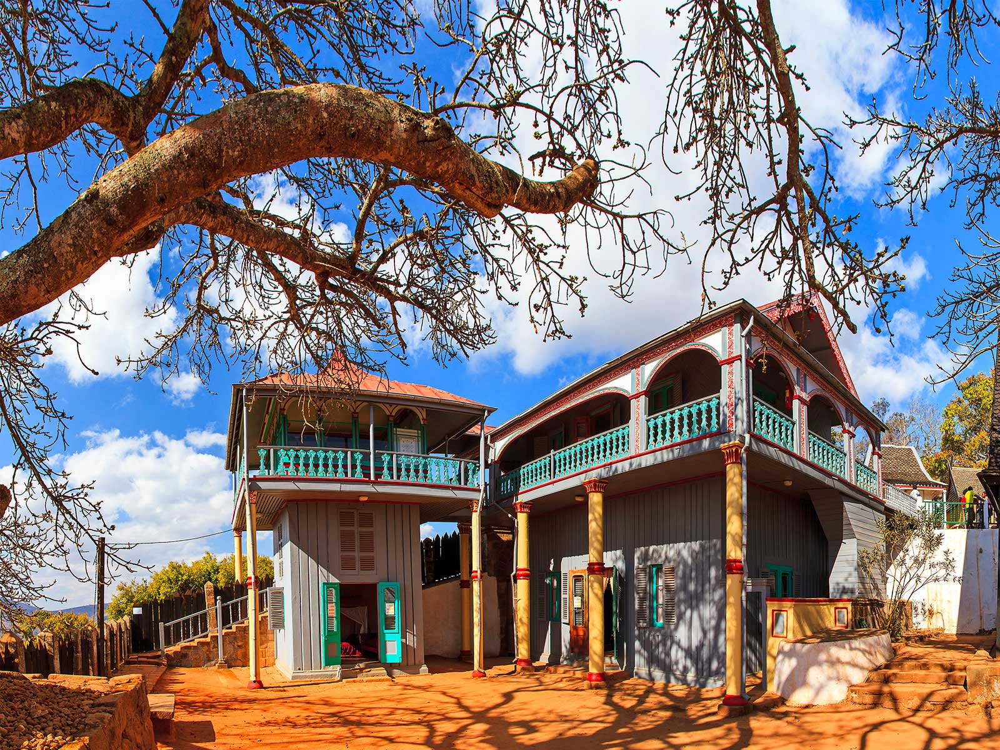
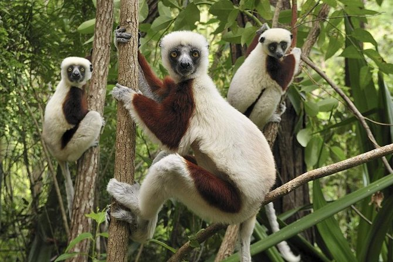
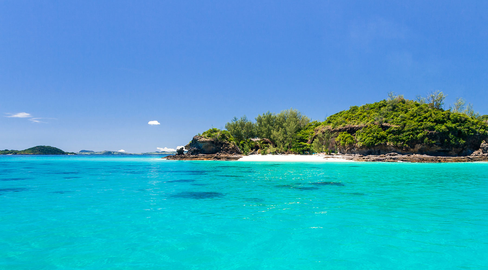

Madagascar
Madagascar , officially the Republic of Madagascar, and previously known as the Malagasy Republic, is an island country in the Indian Ocean, approximately 400 kilometres (250 miles) off the coast of East Africa across the Mozambique Channel. At 592,800 square kilometres (228,900 sq mi) Madagascar is the world's second-largest island country, after Indonesia. The nation consists of the island of Madagascar (the fourth-largest island in the world) and numerous smaller peripheral islands. Following the prehistoric breakup of the supercontinent Gondwana, Madagascar split from the Indian subcontinent around 88 million years ago, allowing native plants and animals to evolve in relative isolation. Consequently, Madagascar is a biodiversity hotspot; over 90% of its wildlife is found nowhere else on Earth. The island's diverse ecosystems and unique wildlife are threatened by the encroachment of the rapidly growing human population and other environmental threats. The archaeological evidence of the earliest human foraging on Madagascar may date up to 10,000 years ago. Human settlement of Madagascar occurred by Austronesian peoples, arriving on outrigger canoes from present-day Indonesia. These were joined around the 9th century AD by Bantu migrants crossing the Mozambique Channel from East Africa. Other groups continued to settle on Madagascar over time, each one making lasting contributions to Malagasy cultural life. The Malagasy ethnic group is often divided into 18 or more subgroups, of which the largest are the Merina of the central highlands. Until the late 18th century, the island of Madagascar was ruled by a fragmented assortment of shifting sociopolitical alliances. Beginning in the early 19th century, most of the island was united and ruled as the Kingdom of Madagascar by a series of Merina nobles. The monarchy ended in 1897 when the island was absorbed into the French colonial empire, from which the island gained independence in 1960. The autonomous state of Madagascar has since undergone four major constitutional periods, termed republics. Since 1992, the nation has officially been governed as a constitutional democracy from its capital at Antananarivo. However, in a 2009 political crisis, president Marc Ravalomanana was made to resign and presidential power was transferred in March 2009 to Andry Rajoelina. Constitutional governance was restored in January 2014, when Hery Rajaonarimampianina was named president following a 2013 election deemed fair and transparent by the international community. Madagascar is a member of the United Nations, the African Union (AU), the Southern African Development Community (SADC), and the Organisation Internationale de la Francophonie. Madagascar belongs to the group of least developed countries, according to the United Nations. Malagasy and French are both official languages of the state. The majority of the population adheres to Christianity, traditional beliefs, or an amalgamation of both. Ecotourism and agriculture, paired with greater investments in education, health, and private enterprise, are key elements of Madagascar's development strategy. Under Ravalomanana, these investments produced substantial economic growth, but the benefits were not evenly spread throughout the population, producing tensions over the increasing cost of living and declining living standards among the poor and some segments of the middle class. As of 2017, the economy has been weakened by the 2009–2013 political crisis, and quality of life remains low for the majority of the Malagasy population.
Avenue of the Baobabs

The avenue of baobab trees that runs between Belo Tsiribihina and Morondava has become an iconic representation of Madagascar’s unique natural heritage. The tree’s unusual shape looks like something out of prehistoric times, but the shape allows them to store water during the dry season. Many baobab trees along the humble dirt road are more than 800 years old, and their trunks are over 150 feet in circumference.
Royal Hill of Ambohimanga
The Royal Hill of Ambohimanga is well-deserving of its UNESCO World Heritage site status. The hill was the burial site for sovereigns between the 15th and 19th centuries, and the city on the hill is home to two palaces, four royal tombs, two sacred basins and a pavilion. Fourteen stone gateways link a series of fortifications and ditches, and the site also features royal trees, sacred places, a seat of justice and a forest where endemic medicinal plants grow.
Lemurs’ Park
Lemurs’ Park is on the RN1 road 13 1/2 miles west of the capital of Madagascar, Antananarivo, in a bend of the River Katsaoka. The 5-hectare, peaceful park is a private sanctuary for nine species of lemur. The animals are former pets or were under threat in their natural habitats; they roam free around the park and are accustomed to visitors. Call the park before visiting to arrange admission.
Nosy Be
Although it’s one of the more touristy spots on Madagascar, Nosy Be is a beach resort that nevertheless remains relatively quiet and untouched. Nosy Be is also called “Nosy Manitra” by the locals, which translates as “Perfumed Island,” because of the scents of cacao, coffee, ylang-ylang, sugar cane and vanilla that waft in from nearby plantations. The agricultural areas form part of the Réserve Naturelle Intégrale de Lokobe, which also features waterfalls and crater lakes.